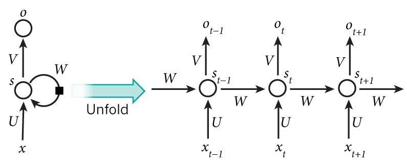
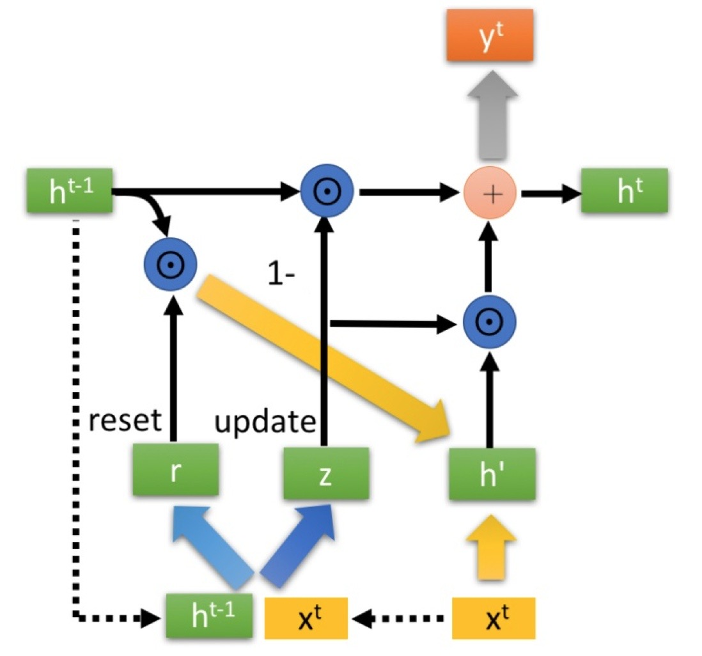
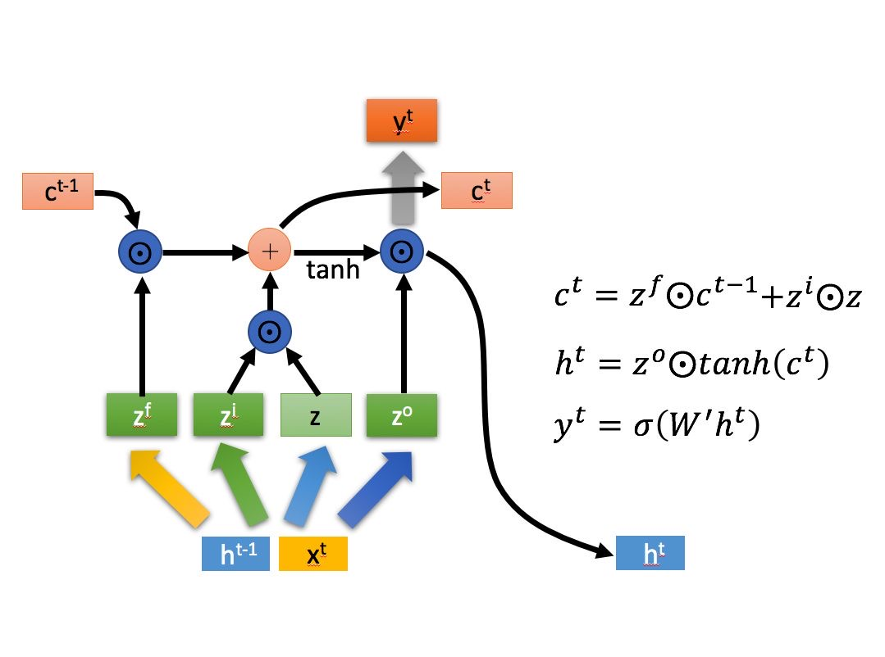

序言
同样，借着复习面试，把RNN家族再梳理回顾一下，包含RNN、GRU、LSTM。
循环神经网络RNN
模型结构

RNN的结构如上图所示，其核心思想是使用同一套参数来更新状态\(s\)与计算输出\(o\)，箭头右侧是按时序展开的模型结构图。可以看到，RNN仅使用了一个状态\(s\)来保存序列信息，共有三个参数矩阵。这一部分公式化描述如下: \[ s_t=f(Ux_t+Ws_{t-1}) \]
\[ o_t=g(Vs_t) \]
其中，\(f\)与\(g\)均为激活函数，激活函数可选的有sigmoid，tanh，relu等（下面会分析）。
RNN有以下缺陷：
- 容易发生梯度消失和梯度爆炸现象（由于导数连乘）。
- 难以捕捉长距离的依赖。
在其中，梯度消失相对于梯度爆炸要更为严重，因为梯度爆炸是可以观测到的（NAN），梯度消失则难以直接观测。梯度爆炸问题很容易解决，可以通过梯度裁剪的方法进行解决。
梯度消失和梯度爆炸
梯度消失和爆炸的解决方法：
- 梯度的剪切以及正则化（常见的是l1正则和l2正则）。
- relu、elu等激活函数。（梯度消失）
- 批标准化（Batch Normalization）。
- 残差结构（将映射F(x)改为F(x)+x，使用relu激活函数的F在x<0时能够无损传播梯度，保证了深层网络的性能）。
- LSTM、GRU等结构。
批标准化 Batch Normalization
Batch Normalization是一种常用于CNN的正则化方法，可以分为两个步骤：
（1）标准化：对batch的数据求均值与标准差，将数据标准化到标准正态分布
（2）进行放缩与平移
整个过程类似于VAE的重参数化，先获得一个正态分布的变量，再进行放缩平移，达到从任意正态分布中取样的效果。
也就是说，batch normlization 假设每个batch的数据服从一个正态分布（参数γ和β学习得来，即通过batch数据计算得来），先将数据标准化，再放缩与平移，使得数据“看起来”是从这个正态分布中取样而来的。
在预测阶段，所有参数的取值是固定的，对BN层而言，意味着μ、σ、γ、β都是固定值。γ和β比较好理解，随着训练结束，两者最终收敛，预测阶段使用训练结束时的值即可。
对于μ和σ，在训练阶段，它们为当前mini batch的统计量，随着输入batch的不同，μ和σ一直在变化。在预测阶段，输入数据可能只有1条，该使用哪个μ和σ，或者说，每个BN层的μ和σ该如何取值？可以采用训练收敛最后几批mini batch的 μ和σ的期望，作为预测阶段的μ和σ。
层标准化 Layer Normalization
Batch Normalization是在Batch的方向上进行Normalization。这种方法在NLP中不是很适合。由于文本序列的长度可变性，一个batch中的数据往往长度不同，进而对每个位置进行标准化不是很合适。
而Layer Normalization则是在序列的方向上进行Normalization。这使得它可以处理变长序列。
激活函数
对于激活函数而言，sigmoid的最大梯度为0.25，因此很容易发生梯度消失现象，而tanh虽然最大梯度为1，但也只有0处取得，也熔岩发生梯度消失。因此RNN常使用relu作为激活函数。relu的梯度非0即1，这能够缓解梯度消失现象，但也有一定的问题：1. 容易发生梯度爆炸。（梯度恒为1时）2. 负数部分梯度恒为0，部分神经元无法激活。elu能够缓解relu的0梯度的问题，但是由于加入了幂运算，会更慢一点。
门控循环单元GRU
模型结构
GRU的思想是在RNN的基础上，引入门控信号来缓解RNN存在的梯度消失问题。模型结构如下：

公式化描述如下（公式中的\(\odot\)代表哈达玛积，即同型矩阵间逐元素乘法）：
首先根据输入\(x_t\)与上一时刻隐藏状态\(h_{t-1}\)计算得到两个门控状态\(z_t\)与\(r_t\)，假设\(h_t\in \mathbb R^H\)： \[ z_t=sigmoid(W_zx_t+U_zh_{t-1})\in \mathbb R^{H} \]
\[ r_t=sigmoid(W_rx_t+U_rh_{t-1})\in \mathbb R^{H} \]
之后，使用重置门计算得到一个新的隐藏状态（即图中的\(h’\)）： \[ \tilde h_t=tanh(Wx_t+U(r_t\odot h_{t-1}))\in \mathbb R^{H} \] 再使用更新门\(z_t\)更新隐藏状态： \[ h_t=(1-z)\odot h_{t-1}+z\odot \tilde h_t\in \mathbb R^{H} \]
长短期记忆网络LSTM
模型结构
LSTM的思想是在RNN的基础上，加入一个不易被改变的新状态\(c_t\)，代表的是0-t时刻的全局信息。而\(h_t\)代表的是在0~t-1时刻全局信息的影响下，\(t\)时刻的信息。换而言之，\(c_t\)变化的很慢，而\(h_t\)变化的很快。

公式化描述如下：
首先计算得到三个门控状态（分别对应图中的\(z^i,z^f,z^o\)）： \[ i_t=sigmoid(W_ix_t+U_ih_{t-1})\in \mathbb R^{H} \]
\[ f_t=sigmoid(W_fx_t+U_fh_{t-1})\in \mathbb R^{H} \]
\[ o_t=sigmoid(W_ox_t+U_oh_{t-1})\in \mathbb R^{H} \]
以及一个与当前输入密切相关的向量（对应图中的\(z\)） \[ \tilde c_t=tanh(W_zx_t+U_zh_{t-1}) \] 接着，更新两种状态： \[ c_t=f_t\odot c_{t-1}+i_t\odot \tilde c_t \]
\[ h_t=o_t\odot tanh(c_t) \]
其中，\(i_t.f_t,o_t\)分别代表信息、遗忘、输出门控。信息和遗忘门控负责cell state的更新，输出门控负责hidden state的更新。具体而言，LSTM可以简单分为以下三个阶段：
- 遗忘阶段，根据遗忘门控，忘记上一个cell state的部分信息。
- 记忆阶段，根据信息门控，将输入信息进行选择记忆。
- 输出阶段，根据输出门控，输出最终的状态。
LSTM VS GRU
本质上，LSTM和GRU都是通过引入门控信号来解决RNN的梯度消失问题。在实现方法上，GRU相对于LSTM要更为简单。GRU抛弃了LSTM中的hidden state（GRU 中的hidden state 实际上是LSTM中的cell state），因为LSTM中的\(h_t\)只是想保存当前时刻的信息，这一部分已经包含到GRU中的\(\tilde h_t\)中了。cell state中的之前的全局信息与当前时刻的信息应当是一个此消彼长的状态，GRU因此直接使用一个门控信号\(z_t\)同时控制了遗忘和更新。
在参数上，GRU有着比LSTM更少的参数，收敛速度更快，并且与LSTM有着差不多的性能表现，因此实际工程中多使用GRU。